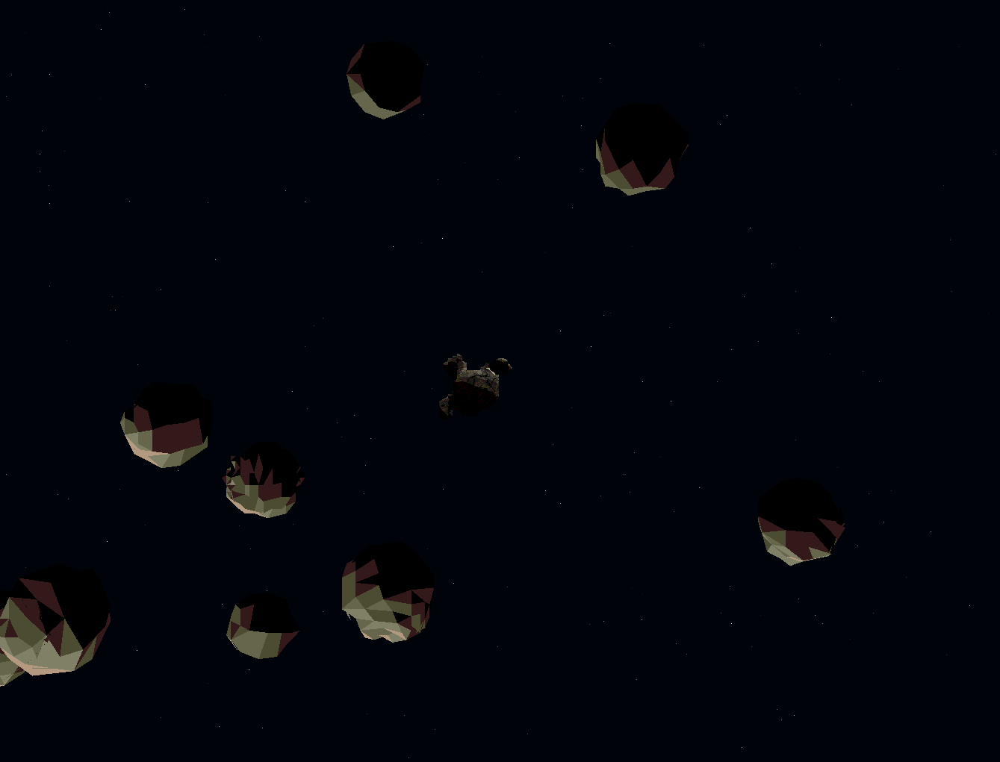

← All projects
Space shooter prototype
Asteroids
An arcade-inspired space shooter with procedural asteroid fields and a PS2-inspired low-poly look, built to develop my C++ and OpenGL experience.

What I built
- Developed the rendering and gameplay systems in OpenGL.
- Implemented procedural asteroid generation for varied play spaces.
- Created an explosion system with visual effects and responsive feedback.
- Built a cohesive PS2-inspired low-poly style through rendering and presentation.
My role
I built it to get more practical C++ and OpenGL experience while recreating the readable loop of a classic asteroid shooter, with a deliberately retro visual direction.
What I learned
Real-time rendering, procedural content, gameplay feedback, and how technical constraints can set a consistent visual identity.
Play it
Like what you see?
I'm looking for my first games industry role as a gameplay or AI programmer. Studios of any size welcome.